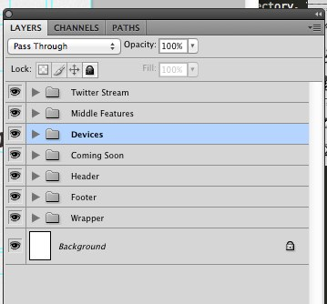
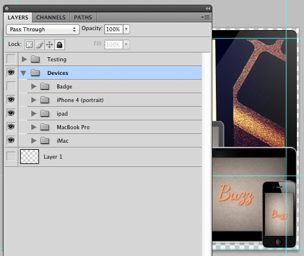
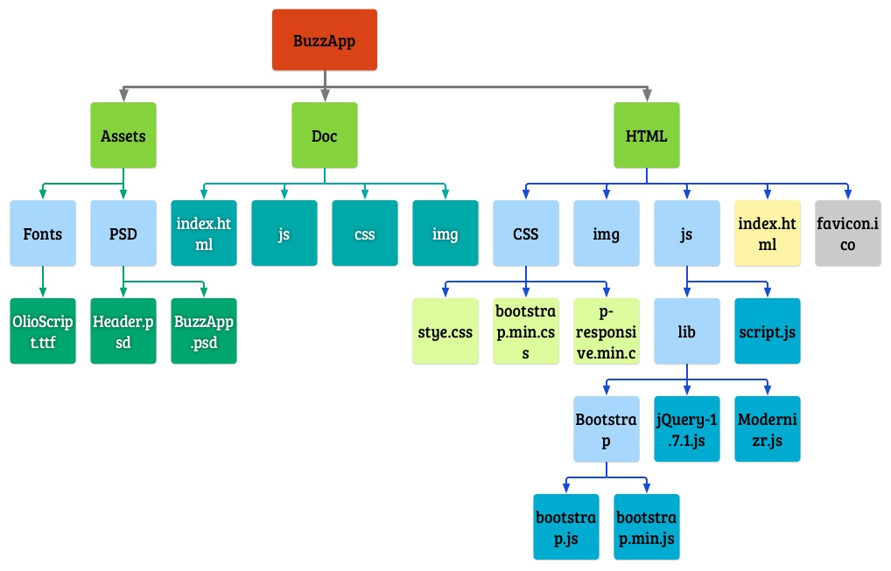

“BuzzApp Web Template” Documentation by “Shajed Evan”
Created By: Shajed Evan
On: 12-02-12
Email: evanshajed@gmail.com
Twitter: @evanshajed
BuzzApp is a single page web template which can be used for App Website, Single Page portfolio, Sales Page, Single Product page and which over way you can fit your content keeping responsiveness in mind. It is well coded, well styled and spent lots of time just to make sure you understand every part of the coded sections without any difficulties. Hope you will enjoy this template :)
Live Example
Contents & Instructions
What are Explained?
This documentation explains how the site has been built and what types of resources has been used. This document also gives necessary instruction on how to modify, edit or update the template according to user's requirement.
List of Available Features
BuzzApp Responsive Web Template comes with some cool features to help it's visitors to engage, interact and have rich experiences both on smart hand-held and desktop.
- Twitter Bootstrap for responsive layout.
- HTML5 Boilerplate for performance and browser supports.
- JQuery v1.7.1 called from Google CDN with local fallback.
- All available JQuery plugins from Twitter Bootstrap.
- Using JQuery Tweet plugin to embed latest tweets.
- Google Rich Snippets Integrated where Appropriates
- Jquery Smooth Scroller used for Move to Button
- Easy to use Content Slider and responsive down to mobile screen
- Valid HTML5 markup
- CSS3 used with fallbacks for old browsers.
- Custom fonts used from Google Web Fonts. Use your font by doing few changes.
- Google Analytic Script Integrated
- Easy to customize
- "Mobile First" Design structure
Background
This theme is a responsive layout with twelve columns using 960 grid that comes with Twitter Bootstrap. For better performance HTML5 Boilerplate has been integrated along with Bootstrap. The template is based on valid HTML5 with CSS3 styling with supports for old browsers.
Structure
1. <body> Element
Template is structured with one Top Header with id="header" and one Main Container with id="container" in the <body> element. Main Container <div> holds total of four sections like First Placeholder, Second Placeholder, Twitter Widget and Footer. First Placeholder and Second Placeholder contains their own sub sections. Here is a code snippet for you to understand the basic structure:
<header id="header" role="banner">
<h2 class="logo"> <a href="#" title="">BuzzApp</a> </h2>
</header>
<div id="main" class="container" role="main">
<!-- First placeholder -->
<div class="row first_placeholder">
<!-- Carousel Slider -->
<section class="span12"></section>
<!-- Comming Soon Segment -->
<section class="span12"></section>
</div>
<hr>
<!-- Second Placeholder -->
<article class="row second_placeholder">
<section class="span4"></section>
<section class="span4"></section>
<section class="span4"></section>
</article>
<!-- Twitter Widget -->
<div class="row tweet"></div>
<!-- Footer Segment -->
<footer id="footer" class="footer"></footer>
</div> <!-- /container -->
2. <head> Element
This template makes use of the HTML5 Doctype. In the head element techniques of both Bootstrap and HTML5 Boilerplate has been merged together. It uses conditional classes for IE browsers. The base template comes with three .css Style Sheets. style.css is the custom .css file where all the custom styling has been defined. On top of that two other .css files has been used. They are bootstrap.css and bootstrap-responsive.css which comes with Bootstrap. You can customize the default Bootstrap CSS components on their Customize and Download page.
The head element also holds a single JavaScript file named "Modernizr" - a default JavaScript Library comes with HTML5 Boilerplate. Checkout their full list of features.
Here is the included markups on head
<!doctype html>
<!--[if lt IE 7]> <html class="no-js lt-ie9 lt-ie8 lt-ie7" lang="en"> <![endif]-->
<!--[if IE 7]> <html class="no-js lt-ie9 lt-ie8" lang="en"> <![endif]-->
<!--[if IE 8]> <html class="no-js lt-ie9" lang="en"> <![endif]-->
<!--[if gt IE 8]><!--> <html class="no-js" lang="en"> <!--<![endif]-->
<head>
<meta charset="utf-8">
<!--
Remove this Comment Tag if you want to use http-equiv but will cause one error on w3 validator! For more information read: https://groups.google.com/forum/?fromgroups#!topic/html5boilerplate/bRtrFSrKjtI
<meta http-equiv="X-UA-Compatible" content="IE=8;FF=3;OtherUA=4" />
-->
<title>BuzzApp ▬ A Mobile Friendly Responsive Web Template</title>
<meta name="description" content="Mobile fierndly webs template by Shajed Evan. Responsive web using HTML5 Boilerplate and Twitter Bootstrap.">
<meta name="author" content="Shajed Evan">
<meta name="viewport" content="width=device-width">
<link rel="stylesheet" href="css/bootstrap.min.css">
<link rel="stylesheet" href="css/bootstrap-responsive.min.css">
<link rel="stylesheet" href="css/style.css">
<script src="js/libs/modernizr-2.5.3-respond-1.1.0.min.js"></script>
</head>
Important Note:
Please make sure your modernizr.js file is placed on the last line before ending </head> element
3. footer Element
<footer$gt; element holds credit information, copyright sign coded with Google Rich Snippets. It also comes with the credit of template Designer --- please don't remove us. Give us the proper credit.
4. Twitter Widget
This widget is a little placeholder which shows latest tweets from a single account. JQuery Tweet Plugin has been used for this small snippets.I have merged the Plugin code into script.js file. But there is a separate backup file in the js/libs folder.
How to change username?
You have to make changes in two places! One, in the HTML file. Two, in script.js file. Please find the following section on index.html
<!-- Twitter Widget -->
<div class="row tweet">
<h3>Latest Update <a href="http://twitter.com/evanshajed" title="Shajed Evan" rel="me"> @evanshajed </a></h3>
<aside class="query">
</aside>
</div>
Change the twitter url and @evanshajed to your username. Next you need to go to script.js file and find the following JQuery finction:
/* Initializing Tweet */
$(".query").tweet({
username: "evanshajed", //give your twitter username here
join_text: "auto",
avatar_size: 48,
count: 1,
loading_text: "loading tweets..."
});
On the code above you will see a line username:"evanshajed". In place of "evanshajed" use your Twitter Username. That's all for Twitter Widget!
5. Slider
BuzzApp is using the Basic Bootstrap Carousel plugin. In this template only two images have been used. You can use as many as you like to. But don't forget about loading time :)
I also recommend to use a dimension of 500 X 375 for each images in the slider for best constraint view. But it is totally up to you!
<!-- Carousel Slider -->
<section class="span12">
<h1 class="visuallyhidden">Cool Responsive Slider</h1>
<div id="#myCarousel" class="carousel slide">
<div class="carousel-inner">
<div class="active item">
<img src="img/big_device.png" alt="Browse BuzzApp On Any Device">
</div>
<div class="item">
<img src="img/mobile_web_testing.png" alt="Testing Responsive Web on Mobile Web Browsers">
</div>
</div>
</div>
</section>
Bootstrap CSS files
All CSS files can be found in css directory. bootstrap.css and bootstrap-responsive.css are two files come with Twitter Bootstrap. bootstrap.css holds the default styling of HTML reset, typography, styles for buttons, form elements etc. bootstrap-responsive.css gives responsive ability on the original structure. You can always get more information on Twitter Bootstrap CSS styling on it's Base CSS page.
Important Note:
For better performance minimized version of Bootstrap CSS files has been used in the original template head element. If you like to change any default styling of Bootstrap use their Custom Generator page and then insert those downloaded files in the template.
style.css
style.css is the main custom css stylesheet which contains all the custom styling used in this template. style.css file is well commented according to specific sections within body element.
CSS Sectioning example
For better understanding styles of each HTML sections has been grouped with meaningful comments. Memorable and consistent naming convention applied for class names.
/* Global Style
Applicable on any element. Insert any global styling in this group
*/
.body{...}
.p{...}
/* Google Web Font Loader Classes */
Google specified Classes
/* Header Style */
Header section Classes
/* First Placeholder Style
--------------------------
*/
.first_placeholder{...}
.first_placeholder h1{...}
/* Collapsible Box Style */
some code for Collapsible Box
/* Carousel Slider */
some code for Carousel
/* IE7, IE8 hacks for First Placeholder Elements */
some code with IE7,IE8 Conditional Classes
/* Second Placeholder Style
---------------------------
*/
.second_placeholder{...}
.second_placeholder h1{...}
/* Featured Section Style */
some code for Featured Section
/* Twitter Widget */
some code for Twitter Widget
/* Footer Style */
some code for Footer Section
/* =============================================================================
Non-Semantic Helper Classes
========================================================================== */
code retrieved from HTML5 Boilerplate
/* Media Queries for specific Mobile or Tab Orientation */
/* Landscape phones and down */
@media (max-width: 480px) { ... }
/* Landscape phone to portrait tablet */
@media (max-width: 767px) { ... }
/* Portrait tablet to landscape and desktop */
@media (min-width: 768px) and (max-width: 979px) { ... }
/* Large desktop */
@media (min-width: 1200px) { ... }
Important Note:
Try to follow the grouping when you insert any new classes. Also follow the naming convention for better practices. Also notice Bootstrap has it's own naming style. Like: .word1-word2. To make our custom style more identical we have used underscore( _ ) sign. Example: .word1_word2
Google Web Fonts Style
This template uses Google Web Fonts for custom typography. "Google Web Fonts" is a free web font service by Google which comes with some great fonts for developers to use on their websites. It is easy to intigrate, change and edit. There are different ways to intigrate Google Web Fonts in your website. You can get detailed tutorials on how to use different techniques on their tutorial page.
Google Web Fonts Using Loader
This template adopted both CSS and JavaScript techniques for better experiences for the users. It uses a defualt font-family for the element where you would like to use your custom font. First the default font is loaded by the browser. When browser finishes loading the custom font your default font replaced with your custom font. This technique gives a boost on user experience. Your users start browsing without any interaption.
Changes On CSS
In this template only h1 element uses custom font named 'Oleo Script'. You will see I have placed a global h1 style with default font family to 'Helvetica Neue'. In addition some Google Web Font Loader Classes has been defined. Like .wf-loading,.wf-inactive,.wf-active. .wf-active is the class where you will place custom font-family with required element.
/* Default font style for h1 */
h1{ font-family: 'Helvetica Neue',Helvetica,Arial,sans-serif; font-weight: 400;}
/* Google Web Font Loader Classes */
.wf-loading h1 { visibility:visible; }
.wf-inactive h1{ visibility:visible;}
.wf-active h1 {font-family: 'Oleo Script',cursive, serif;}
If you like to choose any other custom font-family, just place it into .wf-active h1{font-family: your font family.. ;}.
Changes on JavaScript
You will also need to add the same font-family into script.js file. You will find a snippets taken from Google Web Fonts as on the script.jsfile.
/* Google Font Loader */
WebFontConfig = {
google: { families: [ 'Oleo+Script::latin' ] } //place your font name within ['...']
};
(function() {
var wf = document.createElement('script');
wf.src = ('https:' == document.location.protocol ? 'https' : 'http') +
'://ajax.googleapis.com/ajax/libs/webfont/1/webfont.js';
wf.type = 'text/javascript';
wf.async = 'true';
var s = document.getElementsByTagName('script')[0];
s.parentNode.insertBefore(wf, s);
})();
/* End of Font Loader */
Find this line: google: { families: [ 'Oleo+Script::latin' ] } and place your font name and type. If you feel this is bit tricky here is an easiest way.
- Select your font on Google Web Fonts
- You will see a tab on the bottom for each font pages.
- Select JavaScript tab
- Copy the code within
<script type="text/javascript"> ..... </script> - Paste the code within the following section in
script.jsfile.
/* Google Font Loader */ .... Paste Here .... /* End of Font Loader */
That's it! You are all done! :D
Important Note:
This template uses more advanced techniques for Google Web Fonts Loader. For quick adoption you can mention your custom font-family on .wf-active as well as on the script.js JavaScript file in the '/js' directory.
1. JavaScript Calls
All the JavaScript files has been called right before the ending </body> tag. Included JavaScripts are as follows:
- JQuery version 1.7.1 from Google Ajax API CDN with fallback of local version.
bootstrap.min.js, that comes with Bootstrap. This file is a mash up of all the available JavaScipt Plugins used by Bootstrap.script.js, the custom JavaScript used on this template.
2. Custom JavaScript
script.js is the file which is containing the custom JavaScript calls for the template elements. It includes two additional JQuery Plugins. Those are, JQuery Tweet & JQuery Easing. The main custom function calls starts after the /* Author: Shajed Evan */ comment. Here is the list of calls:
/* Google Font Loader */
... Codes Retrieved from Google Web Fonts ...
/* End of Font Loader */
jQuery(functions($){
/* Initializing Tweet */
Calls tweet method from JQuery Tweet plugin
/* Initializing Carousel Slide */
Initiate slider from bootstrap.min.js and set interval period.
/* Positioning browser when collapsible box is triggered */
Position Window location to #demo element.
});
/* Move to Top Link Easing Effect */
Assign Easing Effect for a#onCollapse and a#onTop anchors.
What's Included?
This template is designed using Photoshop CS4. All the Photoshop PSD source files can be found within Assets -> PSD directory. This directory holds total of 6 PSD file.
- Big Device.psd
- BuzzApp.psd
- Body Background.psd - for Body Background image used within
style.css - Featured Icons.psd - used on Featured Section
- Header.psd - for
<header>background image. - Logo.psd - for logo image.
1. BuzzApp PSD
BuzzApp.psd is the main Photoshop file for BuzzApp Web Template design. It is guided well according to 960 12 Column Grid and Layers were properly grouped according to each sections. You can change each styles at any possible angel you like to.
Important Note:
You will need to install OleoScript Font from the Assets -> Fonts directory, to get the font style used on BuzzApp.psd file.
2. Device PSD
Device.psd is Photoshop file for the devices image used in first image of the slider. The PSD file includes layers for iPhone,iPad,Maccbook Pro and iMac. BuzzApp logo has been included as a separate layer for each devices. You can change them as you like to.
What Comes with this Template?
BuzzApp directory holds three sub-directories like Assets,Doc and HTML. Each of these directories holds their related files and resources used for BuzzApp template development. A Directory Diagram image given bellow.
 View it Large{kind=link}
Behind the Web Crafting!
- Shajed Evan made this mobile web concept into Photoshop Design and then converted into this Responsive HTML5 and CSS3 web template. If possible please leave the credit, on the footer segment.
- OlioScript font is taken from Google Web Fonts
- Icons by Thomas Gajar.
Tweet for quick support
If you need a quick help regarding this Template you can Tweet the developer using following Tweet Button.
Tweet to @evanshajed